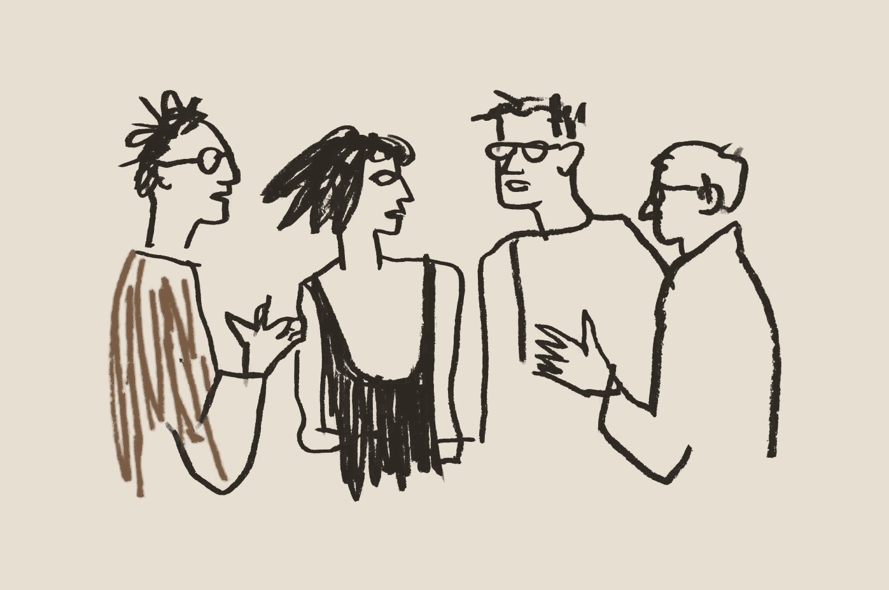

How might CiLAB make circular textiles visible, findable and usable without creating extra work for its team?
How might Gutsy make the first unboxing feel personal and reassuring, and keep that feeling even after repeated orders and subscriptions?
Does the University of Genoa provide students with everything they need to make their education as complete as possible?